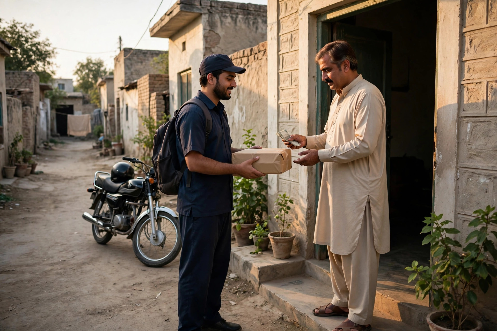

Many new sellers focus on getting orders and think about payments and delivery afterwards. Experienced sellers do the opposite, because they have learned that a business can win an order and still lose money on it through a refused parcel, a damaged item or a payment that never arrives. Payments and delivery are not the exciting part of selling online, but they are the part that quietly decides whether the business survives.
This guide gives general guidance only. Charges, timelines and terms change and differ between providers and areas, so always check the current details of any bank, payment service or courier yourself before relying on them. What does not change is the need for clear systems, honest communication and careful records.
Cash on Delivery: Trusted, With Real Risks
Cash on delivery, where the customer pays when the parcel arrives, remains a popular choice in Pakistan. It lowers the trust barrier, especially for a new seller: the buyer risks nothing until the product is at their door. For many small businesses, offering it is close to essential at the start, because refusing it means losing customers who would happily have paid on arrival.
The risk is the mirror image: because the buyer has paid nothing upfront, some orders are refused at the door, and the seller bears the cost of sending and returning the parcel. Manage this fairly by confirming every order before dispatch, checking the phone number and address with the customer, and sending a short message when the parcel leaves. Clear confirmation removes most casual or mistaken orders without treating genuine customers with suspicion.

Bank Transfers and Mobile Payments
Advance payment by bank transfer or a mobile payment app suits repeat customers, customised orders and items made to order, where dispatching without payment would be risky for the seller. Many buyers are comfortable paying this way to a business they already trust, or when the process is explained clearly and a proper confirmation is shared after payment.
Whichever methods you offer, explain them in plain words on your page and in your order messages: what options exist, what details the customer needs, and when their parcel will be dispatched in relation to payment. Write these explanations once, carefully, and reuse them. This kind of clear service writing is part of what our content strategy and copywriting service helps businesses get right, because confusion about payment is a common reason orders are abandoned at the last step.
Choosing a Courier That Fits Your Business
Courier choice should be based on your area and your products, not on habit. Consider whether the service collects from your location or needs drop-off, which cities and towns it covers well, how it handles cash on delivery amounts, and what happens when a parcel is damaged, lost or refused. A seller of fragile goods needs different answers from a seller of clothing.
- Test a courier with a few real orders before sending everything through them.
- Keep the tracking details of every parcel and share them with the customer.
- Note which areas arrive quickly and which often delay, and tell customers honestly.
- Review refused and returned parcels monthly to spot patterns early.
Many sellers also keep a backup option for areas their main courier serves poorly. Delivery reliability is part of your product in the customer's eyes, even though someone else carries the parcel.
Packing: The Cheapest Protection You Have
Good packing prevents the most avoidable losses in online selling. Use a box or wrapping that matches the product's fragility, protect corners and surfaces, and make sure the contents cannot move around inside. Write or print the customer's name, complete address and phone number clearly, because a single wrong digit in a phone number can turn a simple delivery into a return.
Packing is also presentation. A parcel that arrives tidy, with the correct item, a clear invoice and perhaps a short thank-you note, reassures the customer that they chose a careful business. Our article on building trust in an online store shows how these small physical details support the promises you make online.
Keep Records From Day One
Keep a simple record for every order: customer name, contact, product, amount, payment method and status, courier and tracking reference, and the final outcome. A notebook or a basic spreadsheet is enough at the start. Without records, disputes become arguments from memory, refused parcels cannot be analysed, and you cannot tell which products actually make money after delivery costs.
Records also protect customers. When someone asks where their parcel is, you can answer in minutes with a tracking reference instead of searching through chats. That calm, informed reply is itself a form of customer service that people remember and recommend.
Explain Everything Before the Order
Most payment and delivery problems are really communication problems. Publish a short, clear section wherever you sell covering payment options, how delivery charges are handled, the general dispatch routine, and what happens if an item arrives damaged or needs to be returned. Repeat the key points in the order confirmation message itself, as explained in our guide to starting an online business in Pakistan.
Handled this way, payments and delivery stop being a source of daily stress and become what they should be: a quiet, reliable system behind a growing store.
Frequently Asked Questions
Should I offer cash on delivery?
Many buyers in Pakistan prefer it, especially from a new seller they do not know yet, so offering it can remove a real barrier to first orders. Balance that against refused parcels by confirming orders carefully before dispatch.
Which courier is best for online sellers?
There is no single best courier for everyone. Compare the services that collect from your area on coverage, reliability, how they handle cash on delivery and how they treat damaged or returned parcels, using their current terms.
How can I reduce refused or returned parcels?
Confirm the order, address and phone number with the customer before dispatch, describe the product honestly so it matches expectations, and send a message when the parcel is on its way. Clear communication prevents many avoidable returns.
Should delivery charges be included in the price or shown separately?
Either approach can work, but the total the customer will pay must be clear before they confirm the order. Surprise charges at the door are a common reason for refused parcels and lost trust.
Want More Customers From Google?
Call 0327 7350830 or email seozaheer14@gmail.com. Zaheer Seo Expert, Layyah - Rajan Shah Road, Rana Nagar, Chak 116 TDA, Pakistan. Open 24 hours.
Get Your SEO Strategy →